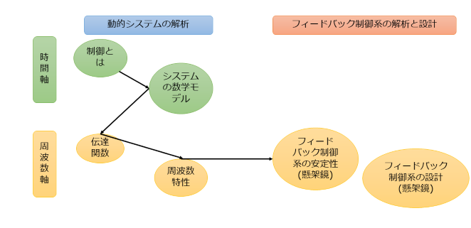
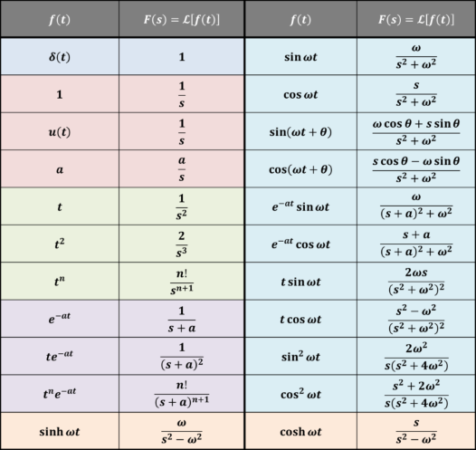
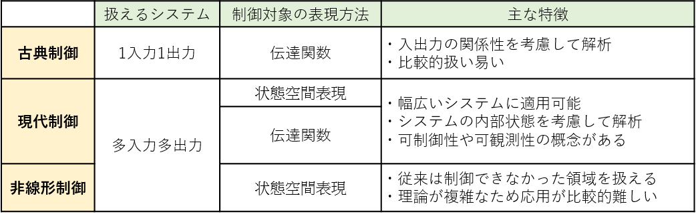
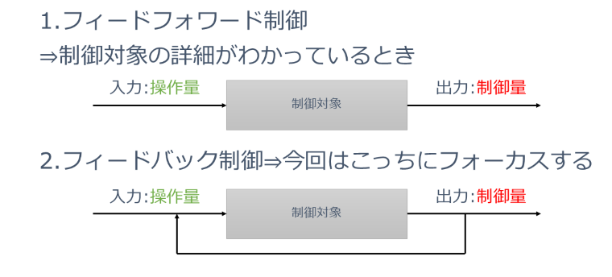
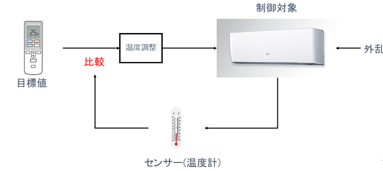

制御工学について
ここでは制御工学の基礎について説明していきます。このページの方針としては3点です。まず、制御工学の基礎について理解してもらいたいです。
次に、すべてを網羅することは難しいので、特に私の研究でよく使われそうなところを厳選して説明していきます。最後に、最終目標として懸架鏡の制御系を理解してもらうことです。
以上3点を念頭に置いて、説明していきます。また、この内容は私の所属している研究室で実際に行ったゼミの内容を参照しています。参考文献も最後に載せますので、
より深く勉強したい方はそちらもセットで読んでいただけると理解が深まるかと思います。
さて、制御工学超入門ということで以下のような順番で説明を展開していきます。
制御工学超入門の概略図
まず、時間空間で制御についてとシステムの数学モデルを構築します。続いて、周波数空間に移りより具体的な内容に入っていきます。
内容に入る前に必要な前提知識を紹介します。それはラプラス変換です。フーリエ変換と同じく時間空間からある空間に変換する変換式のことを言います。
フーリエ変換の場合は時間空間と周波数空間を結んでいます。ラプラス変換は、フーリエ変換とほとんど同じではありますが、時間空間とs空間を結んでいます。
ここでできたs空間とは、周波数空間と同じようなものだと考えてもらって大丈夫です。(厳密には違う)sは$s=j\omega$と定義されるからです。
ラプラス変換の定義式は以下のようになります。
\begin{align}
X(s) = \int_{-\infty}^{\infty} e^{-st}x(t)dt
\end{align}
以降はこのラプラス変換を用います。ラプラス変換した関数は大文字で表し、区別します。また、ラプラス変換表を以下に示しておきます。
ラプラス変換表
これらを用いて計算をすることになります。それでは、制御工学・制御について詳しく説明していきます。
制御工学という学問は以下のように分類されています。
制御工学の分類
古典制御、現代制御、非線形制御の3つがあります。今回扱うのは古典制御です。扱えるシステムは1入力1出力で、制御対象を
伝達関数というもので表現します。
では、
制御とは何でしょうか。制御という言葉が、ここまででたくさん出てきましたが、明確な定義をしていませんでした。
制御とは、
「ある目的(制御量)に適合するように、対象となっているもの(制御対象)に所要の操作(操作量)を加えること」です。これを、
システムといいます。
しかし、制御量と実際の出力には誤差が生じます。これを減らすための操作量の加え方が2つあります。
操作量の加え方
制御対象の詳細がわかっているときは、
フィードフォワード制御という手法を用います。一方で、詳細がわからないときは
フィードバック制御という手法を用います。これは、出力を入力に戻すことからフィードバックと名付けられています。今回はこっちにフォーカスをします。
言葉だけでは今までのことが理解しにくいかと思いますので、具体例を用いて説明していきます。
具体例として
エアコンのシステムを取り上げます。
エアコンのシステム
まずリモコンを用いて、目標値である温度を設定します。設定した温度をもとに温度調整をする機会があるとします。そこから、制御対象である
エアコンに信号が送られます。センサーとして温度計がつけられており、そこで設定した温度からずれがないかをチェックします。もちろん、外乱として窓を開けたりすれば、温度は上がりますし、
エアコンをつけっぱなしにしておけば温度が下がりすぎて寒くなったりします。そこで、温度計の値と設定した温度を比較し、高ければ温度を下げる信号を制御対象に送り、低ければ温度を上げる信号を
制御対象に送ります。これがフィードバック制御です。ポイントは、
目標値とのずれを限りなく0に近づけるということです。
フィードバック制御を用いることで様々なものが制御でき、私たちの生活は安全かつ便利に過ごすことができているのです。